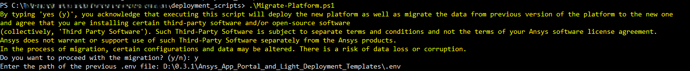

(2) Deploy the platform#
Download and then deploy and start the Ansys App Portal and One Node Deployment Templates™ platform.
Attention
By deploying the platform, you acknowledge and agree that you are installing certain third-party products and/or open-source software (collectively, “third-party software”). Such third-party software is subject to separate terms and conditions separate from the terms of your Ansys software license agreement. Ansys does not warrant or support use of such third-party software separately from the Ansys products.
Download the package#
Download the Ansys App Portal and One Node Deployment Templates (Windows) package from the Ansys Customer Portal.
Locate
Ansys_App_Portal_and_One_Node_Deployment_Templates-0.4.dev1.zip.Unzip
Ansys_App_Portal_and_One_Node_Deployment_Templates-0.4.dev1.zip.Proceed based on the following:
If you already have deployed the 0.3.1 version of the platform, you can migrate the data to the new one. Follow the instructions in the Migrate from the previous version section to run the migration script.
If you do not want to migrate the data from the previous version, you can skip the migration step. Follow the instructions in the Clean deploy the new version of the platform section to run the deployment script directly.
Migrate from the previous version#
When you run the migration script, it also automatically deploys the new version of the platform. You do not need to run the deployment script separately after migration.
Note
The migration script is only available in the Ansys App Portal and One Node Deployment Templates™ 0.4.0 version and later. In the process of migration, all settings and configurations from the previous version of the platform are preserved, including the ports, email domain, firewall rules and solutions directory path. Currently, it is not possible to change the email domain, ports, or solutions directory path during the migration process.
Attention
The migration process runs even if the previous version of the platform is running, but we recommend stopping the previous version before running the migration script.
As part of the migration from version 0.3.1 to 0.4.dev1, the new Ansys App Portal user experience introduces changes in access control. After this upgrade, normal users will no longer have automatic visibility of their previously created applications and projects.
To ensure continued access, portal administrators should review and assign the necessary access rights to normal users. For more information on how to manage user access to applications in the Ansys App Portal, see the Add or remove app access section.
Stop the previous version of the platform, if it is running.
cd .\<directory-where-previous-platform-is-extracted>\deployment_scripts
.\Stop-Platform.ps1
Go to the directory where the new version of the platform is extracted—in this case,
Ansys_App_Portal_and_One_Node_Deployment_Templates-0.4.dev1.cd .\Ansys_App_Portal_and_One_Node_Deployment_Templates-0.4.dev1
Run a Windows PowerShell terminal as administrator and go to the
deployment_scriptsdirectory.cd .\Ansys_App_Portal_and_One_Node_Deployment_Templates-0.4.dev1\deployment_scripts
Execute the migration script.
During the process, it prompts you to enter the
.envfile path that contains the settings for the old version of the platform..\Migrate-Platform.ps1

{kind=link}
Note
The old platform database and volumes are exported to the C:\Users\<user_name>\AppData\Roaming\Ansys_solutions_export_data\ directory.
The migration script also creates the logs in the C:\Users\<user_name>\AppData\Roaming\Ansys_solutions_platform_logs\ directory.
Clean deploy the new version of the platform#
Note
The platform requires SSL certificates to ensure secure communication between its components. These certificates are auto generated during the deployment process unless you choose to provide your own custom certificates.
Attention
This is the process of deploying the new version of the Ansys App Portal and One Node Deployment Templates™ platform from scratch, without migrating any data from the previous version. Do not run this process if you have already migrated the data from the previous version of the platform.
If the previous version of the platform is installed, uninstall it. The deployment script will not work if the previous version is still installed.
To uninstall the previous version, go to the directory where the previous version is installed. Open the Windows PowerShell terminal as administrator and then run the commands in the following section to fully uninstall the platform.
For instructions, see Uninstall the platform.
Run a Windows PowerShell terminal as administrator and go to the
deployment_scriptsdirectory.cd .\Ansys_App_Portal_and_One_Node_Deployment_Templates-0.4.dev1\deployment_scripts
Execute the deployment script.
It checks all prerequisites and notifies you about failures, with the corresponding corrections. During the process, it prompts you to enter some required inputs for the platform setup (for an explanation about those inputs, see the section follows).
.\Deploy-Platform.ps1
During the deployment, you will be asked to specify different settings (if in doubt, you can leave the default values):
Configuration
Description
Default value
Linux Distribution
Specify the Linux distribution to be used by the platform.
The first listed distribution.
Solutions directory path
Specify the path where the
.awasolution files are extracted to locally.C:\Users\<user_name>\AppData\Roaming\Ansys\solutionsEmail domain
Update this to your relevant company’s domain, as only users with email addresses from this domain can register on the Ansys App Portal.
example.comPort to connect to the platform
Specify the port the platform will be accessible through at
http://portal.<hostname>.<domain_name>:<tr_port>.TR_PORT=8080Port to connect to Keycloak (identity provider)
Specify the port Keycloak will be accessible through at
http://keycloak.<hostname>.<domain_name>:<kc_port>/auth.KC_PORT=8011After configuring the platform, you will be prompted to start up the platform.
If you select Yes (or y), the platform will automatically generate self-signed SSL certificates and place them in the
ca_keys,server_certs, andclient_certsdirectories at the root of the platform package.If you prefer to use custom certificates, select No (or n) when prompted to start the platform and then follow the instructions in Manual certificate generation with OpenSSL.
Once the platform is deployed, the URL to access it is displayed in the terminal. You can access the platform by opening a web browser and entering the URL.
Note
The Deploy-Platform.ps1 deployment script performs the following operations automatically:
Logs any errors or warnings in a log file located at
C:\Users\<user_name>\AppData\Roaming\Ansys_solutions_platform_logs.Sets an inbound rule to open the following port ranges in the Windows firewall. These ports are used by the platform services.
Port
Description
PIM_PORTPort used by the instance management system. Default to
8443.3000-9000Port range where optiSLang instances are launched.
30000-65000Port range where a service for communicating with optiSLang is launched.
Manual certificate generation with OpenSSL#
Installing OpenSSL in Windows#
Download the OpenSSL installer for Windows from the official website: https://slproweb.com/products/Win32OpenSSL.html.
Run the installer and follow the installation prompts.
During installation, select the option to copy OpenSSL binaries to the Windows system directory.
After installation, add the OpenSSL binary directory (for example,
C:\\Program Files\\OpenSSL-Win64\\bin) to your system’sPATHenvironment variable.Verify the installation by opening a new Command Prompt and running:
openssl version
Certificate Generation#
Note
Before running the following commands, ensure you replace all placeholder values with the actual values relevant to your environment.
Replace
<GATEWAY_IP>with the actual IP address of your gateway. You can find this value in theGATEWAY_IPvariable within the.envfile of the platform package.Replace
<Provide the subject here>with an appropriate subject for your certificates (for example, your organization name or domain).
Create a directory with name ssl_certificates outside of platform package directory and perform the following steps.
- Generate a CA key and certificate (used to sign server and client certs):
openssl genrsa -out ca.key 4096 openssl req -x509 -new -nodes -key ca.key -sha256 -days 365 -out ca.crt -subj "/CN=<Provide the subject here>"
- Generate a server key and Certificate Signing Request (CSR):
openssl genrsa -out server.key 4096 openssl req -new -key server.key -out server.csr -subj "/CN=<GATEWAY_IP>"
- (Recommended) Add key usage and extended key usage extensions to the server certificate:
Create a file named
server_ext.cnfwith the following content:[ v3_req ] keyUsage = critical, digitalSignature, keyEncipherment extendedKeyUsage = serverAuth subjectAltName = @alt_names [ alt_names ] DNS.1 = <GATEWAY_IP>
Then sign the server CSR with the CA and include the extensions:
openssl x509 -req -in server.csr -CA ca.crt -CAkey ca.key -CAcreateserial -out server.crt -days 365 -sha256 -extfile server_ext.cnf -extensions v3_reqYou now have
server.crt,server.key, andca.crtin your directory.
- Generate a client certificate for mutual TLS:
To enable mTLS (where the server verifies the client), you also need a client certificate and key signed by the same CA:
- Generate a client key and CSR:
openssl genrsa -out client.key 4096 openssl req -new -key client.key -out client.csr -subj "/CN=<Provide the subject here>"
(Recommended) Add key usage and extended key usage extensions to the client certificate:
Create a file named
client_ext.cnfwith the following content:[ v3_req ] keyUsage = critical, digitalSignature, keyEncipherment extendedKeyUsage = clientAuth subjectAltName = @alt_names [ alt_names ] DNS.1 = <GATEWAY_IP>
Then sign the client CSR with the CA and include the extensions:
openssl x509 -req -in client.csr -CA ca.crt -CAkey ca.key -CAcreateserial -out client.crt -days 365 -sha256 -extfile client_ext.cnf -extensions v3_reqYou now have
client.crtandclient.keyin your directory. The client should also trustca.crtas the CA certificate.
- Copy the generated certificates into the extracted package directory:
Be sure to maintain the following folder structure at the package root.
Ansys_App_Portal_and_One_Node_Deployment_Templates-0.4.dev1/ ├─ ca_keys │ ├─ ca.crt │ └─ ca.key ├─ client_certs │ ├─ ca.crt │ ├─ client.crt │ └─ client.key └─ server_certs ├─ ca.crt ├─ server.crt └─ server.key
Verify that each certificate and key is placed in its respective folder as shown in the preceding example.
- Start the platform:
Go to the
deployment_scriptsdirectory:cd .\Ansys_App_Portal_and_One_Node_Deployment_Templates-0.4.dev1\deployment_scripts
Run the following command to start the platform:
.\Start-Platform.ps1